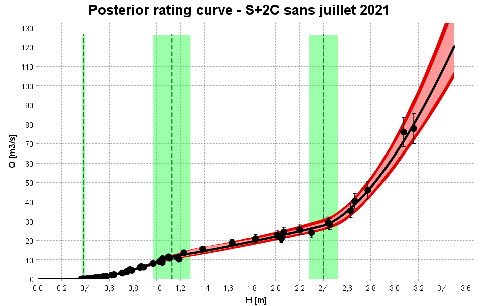
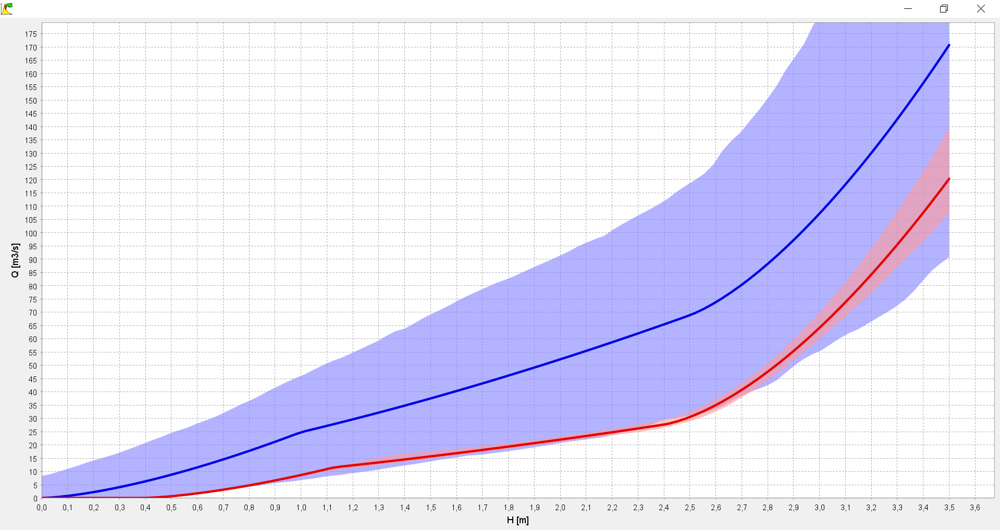
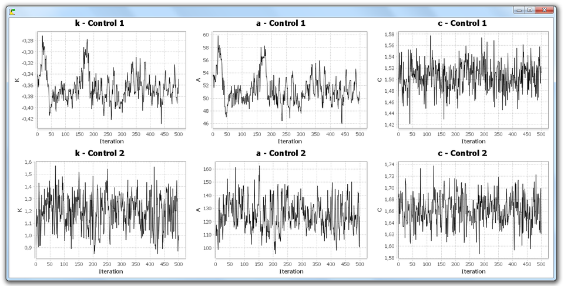
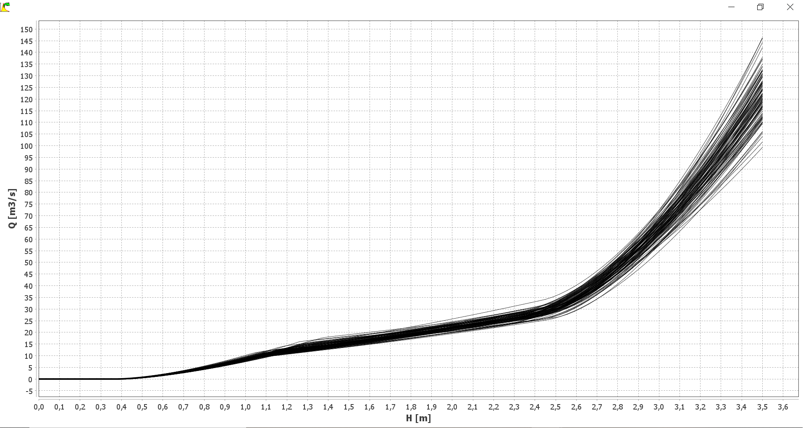

Creating a rating curve
You can create a new rating curve in several ways:
- via the Rating curve...Add menu;
- via the Ctrl+R shortcut;
- by making a right click on the node "Rating curve" in the xplorer tree;
- by clicking the button in the tool bar.
You will be asked to name this new rating curve, and you can enter a description. To specify the properties of the rating curve you have to select:
- A hydraulic configuration (which determines the equation of the curve and the priors);
- A set of gaugings (used to estimate the curve);
- A remnant error model (we recommend to keep the default option).
You are now ready to launch the computation of the rating curve (full details on the underlying statistical models are in this document). In the graph panel, set a grid of stages as you did for the prior curve, then click the Run button. After computation (which should not exceed a few tens of seconds), the panel updates as follows:

Graphics
Posterior rating curve
The graph above shows the posterior rating curve. The term "posterior" indicates that this curve is estimated using the gaugings ("after having observed them"), as opposed to the prior curve that did not use any gauging. In this graph, the vertical lines represent the activation stages of each control (with uncertainties). The curve shown in black is the most probable posterior curve, called in short maxpost curve. Around the maxpost curve, the light red interval represents the parametric uncertainty, that is to say, the uncertainty related only to the estimation of the curve parameters. The dark red interval represents the total uncertainty, that is to say the combination of parametric uncertainty and the uncertainty induced by the remnant error. It is recommended to display the graph using a logarithmic scale for the discharge, which often helps to see the separate controls over the entire range of water level, because relative discharge deviations (in %) then appear the same size regardless of the flow.
It is possible to export the posterior rating curve by right-clicking on the desired curve in the xplorer tree, or via the Rating curve...Export menu. Two export formats are available:
- The .csv format (separator: semicolon). The columns represent the stages, the maxpost curve, the bounds of the 95% parametric uncertainty interval and the bounds of the 95% total uncertainty interval;
- The Barème format. Three curves are exported: the maxpost curve, and the curves corresponding to the upper and lower bounds of the 95% total uncertainty interval. The exported file can be re-imported and thus handled using the Barème software.
Comparison of prior and posterior parameters
It is particularly important to check that the estimated posterior parameters are consistent with the prior assumptions about the controls. A conflict between prior and posterior parameters should be interpreted as an alert on the validity of the rating curve, i.e. on the specified hydraulic configuration. Typically, a significant control may have been omitted, forcing the parameters to adjust beyond what is physically reasonable, in order to stick to gaugings.
The graph below shows how prior knowledge in the parameters (blue) has been transformed into posterior knowledge (in red) with the information provided by the gaugings.

The same information is also available in a table format, with for each parameter a comparison of the prior and posterior estimates, as: value +/- 95% expanded uncertainty.
Comparison of prior and posterior rating curves
The chart compares the prior (blue) and posterior (red) rating curves in one plot. Generally speaking, the posterior curve is expected to be much less uncertain than the prior curve because it benefits from the information provided by the gaugings.

MCMC simulations
The graph shows the simulated parameters from the posterior distribution through the MCMC sampler (all technical details are here). Note that the chart only shows 500 simulated values, but in fact 10,000 values are generated. These 10,000 initial values are simply post-processed and reduced to 500 values to avoid keeping a too large number of simulations. The user can change the properties of MCMC post-processing via the Options...Options MCMC menu.

Spaghettis
As for the prior curve, the graph shows the "spaghettis" of the posterior rating curve: each curve corresponds to a MCMC sample of the parameters k, a, and c of each control.
